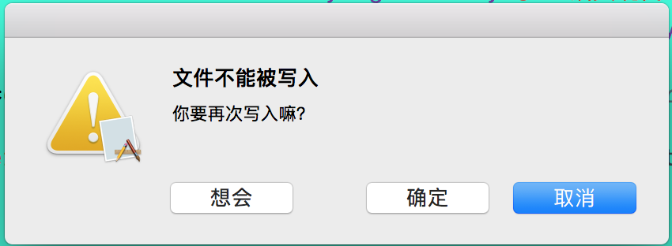

OC之处理错误
运行时错误是指在运行程序时出现的错误，它不同于其他类型的错误（如语法错误、链接错误，这些错误是在执行程序前出现的）。
常见的运行时错误类型有以下几种：
- 逻辑错误：错误原因是代码没有正确实现相应的程序逻辑。只有当运行程序时没有获得预期的输出结果，这类错误才会显现出来。
- 语义错误：错误原因是不正确地使用程序语句
- 用户输入错误：由非法的用户输入信息导致的错误
这些错误如果不及时处理，就会导致各种不利情况，如程序异常终止，不正确操作等。Foundation 框架提供了几类用于处理错误的API：
- 错误对象 (NSError)
- 错误异常 (NSException)
- 断言 (Assert)
1、错误对象 NSError
程序运行时总是会发生各种各样的错误，比如网络请求失败、文件无法打开，文档无法解析等，在 Foundation 框架中提供了 NSError 来对错误信息（有关错误情况的信息，包括域，域特定的错误代码和特定于应用程序的信息）进行封装。我们可以使用 NSError 对象，封装多种错误信息以及实现一些自定义行为。
1.1、分析 NSError 的 属性
| 属性 | 类型 | 属性描述 |
|---|---|---|
domain |
NSErrorDomain |
错误域 |
| code | NSInteger | 标识了error的ID.在相同domain中的每个error都有一个唯一的值 |
userInfo |
NSDictionary |
包含了错误的额外信息 |
localizedDescription |
NSString |
错误的描述，可能包含 failure reason |
localizedFailureReason |
NSString |
错误原因的解释 |
localizedRecoverySuggestion |
NSString |
描述了用户如何操作以修复错误 |
localizedRecoveryOptions |
NSArray |
一个字符串数组，内容是提供给用户操作的按钮的标题，与 recovery suggestion 配合使用 |
| recoveryAttempter | id |
一个实现了NSErrorRecoveryAttempting协议的实例，与 recovery options 配合使用，可以让系统根据用户选择点击的按钮，执行相应的修复方法，但只能在 Cocoa 框架中使用 |
| helpAnchor | NSString |
用于 Cocoa 框架中，NSAlert类执行方法+ alertWithError:时，展示的错误提示框中help anchor button的标题。 |
通过它的两个实例化方法，可以了解到我们要实例化一个 error ，需要传入三个参数：domain、code、userInfo。其中，domain不能为空，code 与 userInfo 可以为空。
1.1.1、错误域(domain)
错误域是一种用于根据系统、子系统和框架等组织错误编码的机制。使用错误域可以识别检测错误的子系统、框架等。错误域还有助于避免编码名称出现冲突，因为不同错误域中的错误编码可以拥有相同的名称。 Foundation 框架声明了以下4中主要的错误域：
| 错误域 | 值描述 |
|---|---|
NSCocoaErrorDomain |
Cocoa Frameworks（其中包括 Foundation 框架和其它 Objective-C 框架）的错误编码 |
NSURLErrorDomain |
URL加载错误码 |
NSStreamSOCKSErrorDomain |
NSError报告SOCKS错误时使用的错误域 |
NSStreamSocketSSLErrorDomain |
NSError报告SSL错误时使用的错误域 |
NSPOSIXErrorDomain |
源自遵守 POSIX 标准的 Unix 的错误编码 |
NSOSStatusErrorDomain |
Apple OS Core Services 和 Carbon framework的错误编码 |
NSMachErrorDomain |
OS 内核错误编码 |
除了以上几种主要的错误域外，还有框架、类分组和单个类错误域。在创建和初始化 NSError 对象时，使用 NSError 类还可以创建自定义的错误域。如 AFNetworking 框架中自定义的错误域：
AFNetworking的错误域 |
值描述 |
|---|---|
AFURLRequestSerializationErrorDomain |
请求序列化错误域 |
AFURLResponseSerializationErrorDomain |
响应序列化错误域 |
| ... | ... |
当然，我们也可以为自己的类系或者框架自定义错误域
FOUNDATION_EXPORT NSErrorDomain const NSCustomErrorDomain;
NSString * const NSCustomErrorDomain = @"这是一个自定义的错误域";
1.1.2、用户信息字典(userInfo)
用户信息字典：其中含有代码和域之外的错误信息，该字典含有的信息类型包括错误的本地化信息和对支持对象的引用。
NSError类定义了一系列常用的用户信息字典值，使用这些键可以为用户信息字典创建键值对。下面表中展出了这些键：
| 键 | 值描述 |
|---|---|
NSUnderlyingErrorKey |
基础实现代码中出现的错误 |
NSLocalizedDescriptionKey |
代表错误的本地化字符串 |
NSLocalizedFailureReasonErrorKey |
描述错误原因的本地化字符串 |
NSLocalizedRecoverySuggestionErrorKey |
恢复错误的本地化建议 |
NSLocalizedRecoveryOptionsErrorKey |
含有用于显示 Alert 的按钮的本地化标题的NSArray实例 |
NSRecoveryAttempterErrorKey |
遵守 NSRecoveryAttempting 协议的对象 |
NSHelpAnchorErrorKey |
表示帮助按钮的帮助信息的本地化字符串 |
NSStringEncodingErrorKey |
含有字符串编码值得 NSNumber 的对象 |
NSFilePathErrorKey |
错误的文件路径 |
NSURLErrorKey |
NSURL 对象 |
NSURLErrorFailingURLString |
含有导致加载数据失败的URL的NSURL对象 |
NSURLErrorFailingURLStringErrorKey |
导致加载数据失败的URL的字符串 |
NSURLErrorFailingURLPeerTrustErrorKey |
表示SSL握手失败状态的 SecTrustRef对象 |
1.2、使用一个NSError实例
1.2.1、自定义一个NSError 实例
NSDictionary *dict = @{NSLocalizedDescriptionKey:@"文件不能被写入",
NSLocalizedRecoverySuggestionErrorKey:@"你要再次写入嘛？",
NSLocalizedRecoveryOptionsErrorKey:@[@"取消",@"确定",@"想会"],
NSURLErrorFailingURLErrorKey:[NSURL URLWithString:@"https://www.baidu.com"],
NSUnderlyingErrorKey:@"基础实现代码中出现的错误",
NSLocalizedFailureReasonErrorKey:@"描述错误原因的本地化字符串",
};
NSError *error = [NSError errorWithDomain:NSCustomErrorDomain code:11111 userInfo:dict];
现在，我们利用用户信息字典的一些键定义了一个 userInfo ，并且使用前文提到的 NSCustomErrorDomain 错误域 ，实例化了一个 error 对象，
为了更直观的观看它的内部信息，我们重写下它的 description 方法:
- (NSString *)description
{
return [NSString stringWithFormat:@"%@", [self dictionaryRepresentation]];
}
- (NSDictionary *)dictionaryRepresentation {
NSMutableDictionary *mutableDict = [NSMutableDictionary dictionary];
unsigned int count = 0;
Ivar *iavrList = class_copyIvarList(self.class, &count);
for (int i = 0; i < count; i ++)
{
Ivar ivar = iavrList[i];
NSString *key = [NSString stringWithUTF8String:ivar_getName(ivar)];
if ([self respondsToSelector:@selector(valueForKey:)])
{
if ([self valueForKey:key])
{
[mutableDict setValue:[self valueForKey:key] forKey:key];
}
}
}
free(iavrList);
return [NSDictionary dictionaryWithDictionary:mutableDict];
}
现在我们看它的打印信息：
{
"_code" = 11111;
"_domain" = "这是一个自定义的错误域";
"_userInfo" = {
NSErrorFailingURLKey = "https://www.baidu.com";
NSLocalizedDescription = "文件不能被写入";
NSLocalizedFailureReason = "描述错误原因的本地化字符串";
NSLocalizedRecoveryOptions = (
"取消",
"确定",
"想会"
);
NSLocalizedRecoverySuggestion = "你要再次写入嘛？";
NSUnderlyingError = "基础实现代码中出现的错误";
};
}
通过它的打印信息，确实可以看到，NSError 主要有三个属性：code、domain、userInfo，其余的属性，其实都是根据userInfo的一些键取出的值。
1.2.2、实例化一个文件路径error：
NSError *error;
[NSString stringWithContentsOfFile:@"123" encoding:NSUTF8StringEncoding error:&error];
我们看下打印信息：
{
"_code" = 258;
"_domain" = NSCocoaErrorDomain;//Foundation 的错误域
"_userInfo" = {
NSFilePath = "123";//错误的文件路径
NSUnderlyingError = "Error Domain=NSPOSIXErrorDomain Code=2 \"No such file or directory\"";//基础实现代码中出现的错误:源自遵守 POSIX 标准的 Unix 的错误编码
};
}
1.2.3 为何使用双指针指向error ？
+ (nullable id)JSONObjectWithData:(NSData *)data options:(NSJSONReadingOptions)opt error:(NSError **)error;
实际开发中我们遇到了很多使用双指针指向 error 的例子，那么为什么要使用双指针呢？
1.3、错误恢复
NSError 类提供了错误修复机制。非正式协议 NSErrorRecoveryAttempting 提供了2个执行错误修复操作的方法。才用该协议的对象必须实现该协议的两个修复方法之一。支持错误恢复的NSError 对象的用户信息目录中必须至少含有下列 3 个条目：
NSRecoveryAttempterErrorKey尝试恢复对象NSLocalizedRecoveryOptionsErrorKey恢复选项NSLocalizedRecoverySuggestionErrorKey恢复建议的本地化字符串
注意：只能在 Cocoa 框架中使用错误恢复功能
1.3.1、在 Mac App 中使用NSAlert 展示错误弹出框
根据前文 2.1 中自定义的 error，
NSAlert *alert = [NSAlert alertWithError:error];
NSModalResponse modalResponse = [alert runModal];
switch (modalResponse) {
case NSModalResponseOK:
{
NSLog(@"NSModalResponseOK");
}
break;
case NSModalResponseStop:
{
NSLog(@"NSModalResponseStop");
}
break;
case NSModalResponseContinue:
{
NSLog(@"NSModalResponseContinue");
}
break;
default:
NSLog(@"default --- %ld",modalResponse);
break;
}
代码运行后的弹出框：

可以看到：
NSLocalizedDescriptionKey对应标题部分NSLocalizedRecoverySuggestionErrorKey对应信息部分NSLocalizedRecoveryOptionsErrorKey给出的修复错误的选项（数组中的元素顺序在弹出框按钮位置从右到左展示）
现在我们分别点击 取消 、确定 、想会 三个按钮得到的打印信息如下：
default --- 1000 //取消
default --- 1001 //确定
default --- 1002//想会
我们可以根据 modalResponse 做出一些修复措施。
1.3.2、当然，我们也可以在 iOS 封装 error 弹出框：
///通过 Categoty 给 UIAlertController 增加一个实例化的类方法
@implementation UIAlertController (HandleError)
+ (instancetype)showError:(NSError *)error ActionHandler:(void (^)(NSString *buttonTitle))handler
{
UIAlertController *alertController = [UIAlertController alertControllerWithTitle:error.localizedDescription message:error.localizedRecoverySuggestion preferredStyle:UIAlertControllerStyleAlert];
[error.localizedRecoveryOptions enumerateObjectsUsingBlock:^(NSString * _Nonnull obj, NSUInteger idx, BOOL * _Nonnull stop)
{
UIAlertAction *action = [UIAlertAction actionWithTitle:obj style:UIAlertActionStyleDefault handler:^(UIAlertAction * _Nonnull action) {
handler(obj);
}];
[alertController addAction:action];
}];
return alertController;
}
@end
还记得我们在 2.1 中实例化的 error嘛？现在我们在 iOS 中弹出 alertController
UIAlertController *alertController = [UIAlertController showError:error ActionHandler:^(NSString *buttonTitle) {
NSLog(@"buttonTitle === %@",buttonTitle);
}];
[self presentViewController:alertController animated:YES completion:nil];
现在我们分别点击 取消 、确定 、想会 三个按钮得到的打印信息如下：
buttonTitle === 取消
buttonTitle === 确定
buttonTitle === 想会
我们可以根据获取的修复键值，做出一些修复
错误回应对象
Application Kit提供了多个 API 和机制，使用它们可以回应封装在NSError对象中的错误。NSResponder类定义了一个错误回应对象链条，使用该链条可以在层次结构中向上传递事件和行动消息。该类含有多个方法，使用这些方法可以在相关NSError对象中显示信息，然后将错误信息转发给下一条回应对象。该层次结构中的每个对象都能够以适当的方式处理错误，还可以向错误添加额外的相关信息。
2、NSException
NSException 一个表示中断程序执行正常流程的特殊条件的对象，使用它实现异常处理。 异常是中断正常程序执行流程的特殊情况。每个应用程序都会因为不同的原因而中断程序 例如，一个应用程序可能会将保存在写保护目录中的文件解释为异常。从这个意义上说，这个例外相当于一个错误。另一个应用程序可能会将用户的按键（例如Control+C）解释为一个异常：表示应该中止长时间运行的进程。
2.1、NSException 的属性
| 属性 | 类型 | 属性描述 |
|---|---|---|
name |
NSExceptionName |
异常的名称,用于唯一标识接收者的字符串 |
reason |
NSString |
异常的起因 |
userInfo |
NSDictionary |
含有用户对异常自定义信息的目录 |
callStackReturnAddresses |
NSArray |
调用堆栈返回地址 |
callStackSymbols |
NSArray |
调用堆栈的符号集 |
2.1.1 NSExceptionName 常规异常
| 异常名称 | 描述 |
|---|---|
NSGenericException |
普通异常 |
NSMallocException |
内存异常(已弃用，目前未使用) |
NSRangeException |
当尝试访问超出某些数据的范围时引发的异常（如数组、字符串） |
NSInvalidArgumentException |
当向方法传送非法常数时引发的异常 |
NSInternalInconsistencyException |
当内部断言失败（如使用NSAssert函数）并表明代码出现了意外情况时引发的异常 |
NSDestinationInvalidException |
因内部断言失败引发的分布式对象异常 |
NSObjectInaccessibleException |
当远程对象被不该访问它的线程访问时引发的异常 |
NSObjectNotAvailableException |
因对象还没有发布，所以远程NSConnection对象拒绝向它发送消息而引发的分布式对象异常 |
NSPortTimeoutException |
在发送或者接收操作过程中，端口过期引发的异常 |
NSInvalidSendPortException |
NSConnection对象的发送端口变得不合法引发的异常 |
NSInvalidReceivePortException |
NSConnection对象的接收端口变得不合法引发的异常 |
NSPortSendException |
当向端口发送消息时出现的 NSPort常规错误 |
NSPortReceiveException |
当向端口接收消息时出现的 NSPort 常规错误 |
当然，我们也可以为自己的类系或者框架自定义异常名称
FOUNDATION_EXPORT NSExceptionName const NSCustomException;
NSString * const NSCustomException = @"这是一个自定义的异常";
2.2、创建一个 NSException 实例
NSException *exception = [NSException exceptionWithName:NSCustomException reason:@"why exception" userInfo:@{@"ExceptionSuggest":@"Kill App"}];
NSLog(@"exception == \n %@",exception);
打印exception
{
name = "这是一个自定义的异常";
reason = "why exception";
userInfo = {
ExceptionSuggest = "Kill App";
};
}
这时程序正常运行，为何没有异常终止呢？
我们看到有个 - (void)raise;方法，我们没有调用，我们调用 raise 方法，再次运行程序，可以发现程序异常终止了：
Terminating app due to uncaught exception '这是一个自定义的异常', reason: 'why exception'
*** First throw call stack:
(
0 CoreFoundation 0x000000011235612b __exceptionPreprocess + 171
1 libobjc.A.dylib 0x000000011149df41 objc_exception_throw + 48
2 CoreFoundation 0x0000000112356079 -[NSException raise] + 9
3 objective_c_language 0x000000010e573ba4 -[AssertTableViewController creatNSException] + 356
4 objective_c_language 0x000000010e57320c -[AssertTableViewController tableView:didSelectRowAtIndexPath:] + 364
5 UIKit 0x0000000112bf3839 -[UITableView _selectRowAtIndexPath:animated:scrollPosition:notifyDelegate:] + 1810
6 UIKit 0x0000000112bf3a54 -[UITableView _userSelectRowAtPendingSelectionIndexPath:] + 344
7 UIKit 0x0000000112abcd59 _runAfterCACommitDeferredBlocks + 318
8 UIKit 0x0000000112aabbb1 _cleanUpAfterCAFlushAndRunDeferredBlocks + 280
9 UIKit 0x0000000112adb0e0 _afterCACommitHandler + 137
10 CoreFoundation 0x00000001122f8c07 __CFRUNLOOP_IS_CALLING_OUT_TO_AN_OBSERVER_CALLBACK_FUNCTION__ + 23
11 CoreFoundation 0x00000001122f8b5e __CFRunLoopDoObservers + 430
12 CoreFoundation 0x00000001122dd124 __CFRunLoopRun + 1572
13 CoreFoundation 0x00000001122dc889 CFRunLoopRunSpecific + 409
14 GraphicsServices 0x0000000116cc99c6 GSEventRunModal + 62
15 UIKit 0x0000000112ab15d6 UIApplicationMain + 159
16 objective_c_language 0x000000010e609aef main + 111
17 libdyld.dylib 0x00000001155edd81 start + 1
)
libc++abi.dylib: terminating with uncaught exception of type NSException
那么，我们能让我们的程序不异常终止嘛？我们这时该如何做呢？
2.3、捕获异常 NSUncaughtExceptionHandler
因为某个NSException 导致程序 Crash 的，只有拿到这个NSException ，获取它的reason 、name 、callStackSymbols 信息，才能确定出问题的程序位置。Apple 提供了 NSSetUncaughtExceptionHandler()函数去获取NSException的异常，注册即可捕获异常信息：
typedef void NSUncaughtExceptionHandler(NSException *exception);
//指向顶级错误处理函数的指针，我们可以在程序终止之前执行最后一次记录
FOUNDATION_EXPORT NSUncaughtExceptionHandler * _Nullable NSGetUncaughtExceptionHandler(void);
//设置顶层错误处理函数，我们可以在程序终止之前执行最后一次记录,我们常用这个C 函数来收集 App 的崩溃信息
FOUNDATION_EXPORT void NSSetUncaughtExceptionHandler(NSUncaughtExceptionHandler * _Nullable);
我们在程序启动时加上一个异常捕获监听，然后处理程序崩溃时的回调动作，核心代码如下：
@implementation AppDelegate
//获取app信息
NSString * const appInfo(void)
{
NSString *appInfo = [NSString stringWithFormat:@"App : %@ %@(%@)\nDevice : %@\niOS Version : %@ %@\n",
[[NSBundle mainBundle] objectForInfoDictionaryKey:@"CFBundleDisplayName"],
[[NSBundle mainBundle] objectForInfoDictionaryKey:@"CFBundleShortVersionString"],
[[NSBundle mainBundle] objectForInfoDictionaryKey:@"CFBundleVersion"],
[UIDevice currentDevice].model,
[UIDevice currentDevice].systemName,
[UIDevice currentDevice].systemVersion
];
return appInfo;
}
///获取日志文件路径
NSString * const errorLogPath(void){
return [NSSearchPathForDirectoriesInDomains(NSDocumentDirectory, NSUserDomainMask, YES).firstObject stringByAppendingPathComponent:@"errorLog"];
}
///获取异常崩溃信息
void UncaughtExceptionHandler(NSException *exception){
NSArray *callStack = [exception callStackSymbols];//异常的堆栈信息
NSString *reason = [exception reason];//异常原因
NSString *name = [exception name];//异常名称
NSString *content = [NSString stringWithFormat:@"========异常错误报告========\nappinfo:%@\nname:%@\nreason:\n%@\ncallStackSymbols:\n%@",appInfo(),name,reason,[callStack componentsJoinedByString:@"\n"]];
NSLog(@"content -------- %@",content);
//将错误日志保存到本地，在合适的时机上传至业务服务器
NSMutableArray *array = [NSMutableArray arrayWithContentsOfFile:errorLogPath()];
[array insertObject:content atIndex:0];
[array writeToFile:errorLogPath() atomically:YES];
}
- (BOOL)application:(UIApplication *)application didFinishLaunchingWithOptions:(NSDictionary *)launchOptions{
NSSetUncaughtExceptionHandler(&UncaughtExceptionHandler);
return YES;
}
@end
2.4、Single 异常/中断
用于处理内存访问错误、内存重复释放等错误，这些错误发送的Single，我们称之为 Single 异常。对这些异常采用上文的NSSetUncaughtExceptionHandler()函数处理是无效的，我们需要利用 UNIX标准的 Single 机制，注册 Single 等信号发生时的处理函数，在该函数中，我们可以输出堆栈信息、版本信息。
核心代码如下所示：
void MySingleHandle(int single)
{
NSMutableString *string = [[NSMutableString alloc] init];
[string appendString:@"Stack:\n"];
void *callstack[128];
int i ,frames = backtrace(callstack,128);
char ** str = backtrace_symbols(callstack, frames);
for (i = 0; i < frames; ++i) {
[string appendFormat:@"%s\n",str[i]];
}
//将 string 存储至本地，在合适的时机上传值业务服务器
}
//信号量截断
void InstallUncaughtExceptionHandler(void)
{
signal(SIGABRT, MySingleHandle);
signal(SIGILL, MySingleHandle);
signal(SIGSEGV, MySingleHandle);
signal(SIGFPE, MySingleHandle);
signal(SIGBUS, MySingleHandle);
signal(SIGPIPE, MySingleHandle);
}
其中：函数int backtrace(void**,int) 与 函数 char** backtrace_symbols(void* const*,int)在 execinfo.h文件声明
2.5、Crash 分析
上文我们讲述了如何收集异常信息。我们收集崩溃日志的最终目的是分析和解决崩溃，找出崩溃原因，积累经验，提升产品质量。 我们来分析一份标准的iOS崩溃日志，该日志由：进程信息、基本信息、异常信息、线程回溯、线程状态、动态库等几部分组成。
// ------------ 1、进程信息 ------------
Incident Identifier: 8CB6514E-4F90-B66F-4BF7F5DF703E
CrashReporter Key: 69bc374aa65c7f951d99872940cece2c0
Hardware Model: iPhone9,1
Process: QQ [13549]
Path: /private/var/containers/Bundle/Application/E5603EE4-DD98-4C09-ACC3-DCE3D820D2E7/qq.app/qq
Identifier: com.qq.iphoneclient
Version: 10.1.30.300 (10.1.30)
Code Type: ARM-64 (Native)
Role: Non UI
Parent Process: launchd [1]
Coalition: com.qq.iphoneclient [4218]
// ------------ 2、基本信息 ------------
Date/Time: 2018-08-20 21:09:43.2632 +0800
Launch Time: 2018-08-20 21:09:34.3936 +0800
OS Version: iPhone OS 11.3.3 (14G60)
Report Version: 104
// ------------ 3、异常信息 ------------
Exception Type: EXC_CRASH (SIGKILL)
Exception Codes: 0x0000000000000000, 0x0000000000000000
Exception Note: EXC_CORPSE_NOTIFY
Termination Reason: Namespace SPRINGBOARD, Code 0x8badf00d
Triggered by Thread: 0
Filtered syslog:
None found
Last Exception Backtrace:
0 CoreFoundation 0x1836e2fe0 __exceptionPreprocess + 124
1 libobjc.A.dylib 0x182144538 objc_exception_throw + 55
2 CoreFoundation 0x1836e2f28 +[NSException raise:format:] + 115
3 Foundation 0x18410ee78 -[NSThread start] + 127
4 WeChat 0x1026e89b4 0x100014000 + 40716724
5 WeChat 0x1025c14a4 0x100014000 + 39507108
6 UIKit 0x18993aec8 -[UISearchDisplayController setActive:animated:] + 511
...
// ------------ 4、线程回溯 ------------
Thread 0 name: Dispatch queue: com.apple.main-thread
// ------------ 5、堆栈信息 ------------
Thread 0 Crashed:
0 libsystem_malloc.dylib 0x0000000182713d74 szone_size + 192
1 libsystem_malloc.dylib 0x0000000182713a94 free + 120
2 CoreFoundation 0x00000001835ca0d4 -[__NSDictionaryI dealloc] + 180
3 CoreText 0x000000018636e6f8 -[CTFeatureSetting dealloc] + 44
4 CoreFoundation 0x00000001836d29ac common_removeAllObjects + 156
5 CoreFoundation 0x00000001835c69f0 -[__NSArrayM dealloc] + 28
6 CoreFoundation 0x0000000183719174 __CFBasicHashDrain + 284
7 CoreFoundation 0x0000000183692c28 _CFRelease + 216
...
Thread 1:
0 libsystem_kernel.dylib 0x00000001826dce1c __psynch_cvwait + 8
1 libsystem_pthread.dylib 0x00000001827a4814 _pthread_cond_wait + 640
2 Matrix 0x00000001051765b0 0x105110000 + 419248
...
// ------------ 6、线程状态 ------------
Thread 0 crashed with ARM Thread State (64-bit):
x0: 0x0000000000000000 x1: 0x0000000000000000 x2: 0x0000000000000000 x3: 0x0000000127534067
x4: 0x0000000182137b07 x5: 0x000000016fde6b30 x6: 0x000000000000006e x7: 0xffffffffffffffec
x8: 0x0000000008000000 x9: 0x0000000004000000 x10: 0x000000000000000b x11: 0x000000000000000b
x12: 0x0000000000000010 x13: 0x000000018392dc0e x14: 0x00000000ffffffeb x15: 0x0000000000000000
...
// ------------ 7、动态库信息 ------------
Binary Images:
0x104964000 - 0x104997fff dyld arm64 <93b6f8d0b0c03d8695fbd178c57cb071> /usr/lib/dyld
0x1049ec000 - 0x104cc7fff TXLiteAVSDK_Smart_No_VOD arm64 <22c67ae641863022b877827c5b9e2b8f> /var/containers/Bundle/Application/E67E2E70-AEFB-49C2-8006-BBBE48F858E0/qq.app/Frameworks/TXLiteAVSDK_Smart_No_VOD.framework/TXLiteAVSDK_Smart_No_VOD
0x105110000 - 0x1051e3fff Matrix arm64 <950bce0c53db3662a8b6577ff912fea1> /var/containers/Bundle/Application/E67E2E70-AEFB-49C2-8006-BBBE48F858E0/qq.app/Frameworks/Matrix.framework/Matrix
0x1059d4000 - 0x105a4bfff GPUImage arm64 <847b060687ca3896ae1690df0370dc94> /var/containers/Bundle/Application/E67E2E70-AEFB-49C2-8006-BBBE48F858E0/qq.app/Frameworks/GPUImage.framework/GPUImage
...
2.5.1、进程信息
我们在上文的崩溃信息，可以看到相关崩溃进程信息：
Incident Identifier：Crash 的唯一标识符CrashReporter Key：映射到设备的唯一 key ，如果多个 Crash 拥有相同的 key，说明这系列 Crash 只发生在一个或者少数几个设备上。Hardware Model：设备类型。如果很多 Crash log 都来自相同的设备，说明该应用在特定的设备上存在问题。Process：应用的名称，里面的数字(QQ [13549])是 Crash 时的 PID。Path：应用在手机上的路径Identifier：应用的Bundle IDVersion： 应用的版本号Code Type：代码类型Role：在停止的生活task_role被分配的进程。Parent Process：Coalition：
2.5.2、基本信息
崩溃设备基本信息，包含闪退发生的日期与时间、设备的iOS版本等
Date/Time：Crash 发生的时间Launch Time：App 启动的时间OS Version： iOS版本，如iPhone OS 10.3.3 (14G60)，10.3.3是系统版本，14G60是 Build 号，每个系统版本可能对应多个 Build 号。Report Version
2.5.3、异常信息
Crash 时异常类型、异常码和抛出异常的线程等信息。
Exception Type：异常类型Exception Subtype：可读的Exception Codes的名称Exception Codes：异常码Termination Signal：Termination Reason：当进程被终止时的原因及信息Terminating Process：Triggered by Thread：异常发生的线程
2.5.4、 常见异常码Exception Codes
code |
含义 |
|---|---|
0x8badf00d |
watchDog超时，意为“ate bad food” |
0xdead10cc |
死循环 |
0xdeadfall |
用户强制退出，意为“dead fall” |
0xbaaaaaad |
用户按住 Home 键和音量键，获取当前内存状态，不代表崩溃 |
0xbad22222 |
VoIP 应用被 iOS 干掉 |
0xc00010ff |
因为太烫了被干掉，意为“coll off” |
0xdead10cc |
在后台时仍然占据系统资源（比如通信录）被干掉，意为“dead lock” |
2.5.5、 常见异常类型Exception Type
异常类型Exception Type，我们经常遇到的 SEGV(Segmentation Violation ，段错误)，表明内存操作不当，比如访问一个没有权限的内存地址：
Single |
含义 |
|---|---|
EXC_BAD_ACCESS SIGSEGV |
内存使用错误，例如：1、访问无效内存地址，比如访问Zombie对象；2、尝试往只读区域写数据；3、解引用空指针；4、使用未初始化的指针；5、栈溢出；6、再次调用已经被释放的对象 |
EXC_CRASH SIGABRT |
收到Abort信号，可能自身调用absort()或者收到外部发来的信号；比如NSDictionary传入nil产生的crash |
SIGBUS |
总线错误，与SIGSEGV不同的是：SIGSEGV访问的是无效地址（虚存映射不到物理内存），而SIGBUS访问的是有效地址，但总线访问异常（如地址对齐问题） |
SIGILL |
尝试执行非法指令，可能不被识别或者没有权限 |
SIGFPE |
floating point error，数学计算问题，比如除零操作 |
SIGPIPE |
管道另一端没有进程接手数据 |
SIGTERM |
程序结束信号，与SIGKILL不同的是：该信号可以被堵塞和处理。通常用来要求程序自己正常退出。 |
2.5.6、线程回溯
线程回溯，提供应用中所有线程的回溯日志
2.5.7、堆栈信息
分析 Crash 最重要的信息，可以帮助我们快速定位 Crash位置与原因，这些信息都保存在 .dSYM 文件中。格式为：frame 号 + 库名 + 函数调用地址 + 函数地址起始行数 + 执行到的行数。
我们以上述日志为例来分析：
| Frame | 库名 | 函数调用地址 | 函数地址起始行数 | 执行到的行数 |
|---|---|---|---|---|
0 |
libsystem_malloc.dylib |
0x0000000182713d74 |
szone_size |
+ 192 |
1 |
libsystem_malloc.dylib |
0x0000000182713a94 |
free |
+ 120 |
2 |
CoreFoundation |
0x00000001835ca0d4 |
-[__NSDictionaryI dealloc] |
+ 180 |
3 |
CoreText |
0x000000018636e6f8 |
-[CTFeatureSetting dealloc] |
+ 44 |
2.5.8、线程状态
Crash 时寄存器中的值，一般可忽略
2.5.9、动态库信息
包括动态库名称、UUID、模块起始地址、模块结束地址、指令集种类、安装路径等信息，在符号化时需要用到
2.6、NSAssertionHandler
@interface NSAssertionHandler : NSObject {
@private
void *_reserved;
}
//返回与当前线程关联的对象；如果没有与当前线程相关联的NSAssertionHandler，此方法将创建一个并将其分配给该线程
@property (class, readonly, strong) NSAssertionHandler *currentHandler;
//使用 NSLog 记录一条错误消息，其中包含失败方法的名称，对象的类名称，源文件的名称和行号
- (void)handleFailureInMethod:(SEL)selector object:(id)object file:(NSString *)fileName lineNumber:(NSInteger)line description:(nullable NSString *)format,... ;
//使用 NSLog 记录包含函数名称，文件名称和行号的错误消息
- (void)handleFailureInFunction:(NSString *)functionName file:(NSString *)fileName lineNumber:(NSInteger)line description:(nullable NSString *)format,... ;
@end
我们看到 NSException.h 文件里还有个 NSAssertionHandler 类，继承 NSObject ，那么它是干什么用的呢？NSAssertionHandler会自动创建对象来处理错误的断言
我们来看看 NSException.h 中的一段 NSAssert 函数的宏定义：
#define NSAssert(condition, desc, ...) \
do { \
__PRAGMA_PUSH_NO_EXTRA_ARG_WARNINGS \
if (__builtin_expect(!(condition), 0)) { \
NSString *__assert_file__ = [NSString stringWithUTF8String:__FILE__]; \
__assert_file__ = __assert_file__ ? __assert_file__ : @"<Unknown File>"; \
[[NSAssertionHandler currentHandler] handleFailureInMethod:_cmd \
object:self file:__assert_file__ \
lineNumber:__LINE__ description:(desc), ##__VA_ARGS__]; \
} \
__PRAGMA_POP_NO_EXTRA_ARG_WARNINGS \
} while(0)
Foundation框架的断言函数NSAssert是在 Objective-C 代码中启用断言创建操作的宏。每个断言宏都会对条件求值，如果得到的值为假，就会向NSAssertionHandler实例发送一个描述失败情况的字符串(并且可能在该字符串中添加printf风格的参数)。NSAssertionHandler是一个Foundation框架类，用于处理获得假值的断言，而且每个程序线程都拥有本身的NSAssertionHandler对象。因此，当Foundation框架断言宏的求值为假时，就会将错误情况描述发送给当前线程的NSAssertionHandler对象，该对象会记录错误，并抛出使程序终止的异常(确切的说是一个NSInternalInconsistencyException实例)。NSAssertionHandler实例通常不是以编程方式创建的，而是由断言函数创建的。
也就是说，NSAssertionHandler实例是自动创建的，用于处理错误断言。如果 NSAssert和NSCAssert条件为假，会向 NSAssertionHandler 实例发送一个表示错误的字符串。每个线程都有它自己的NSAssertionHandler实例。
我们可以自定义处理方法，从而使用断言的时候，控制台输出错误，但是程序不会直接崩溃。
3、断言 Assert
断言是一种在代码中检查某个情况存在的语句。断言用于验证运行时的假设，如果假设不成立，就应该终止程序。通过编译器指令可以禁用断言，因此只应使用断言检查编程和语义错误，不能使用它检查非法用户输入信息等错误。 在代码中添加断言语句，是检测和纠正 bug 的最高效、最快捷的途径。断言语句还可以描述程序的逻辑，因而可以提高程序的可维护性 每个断言都含有一个布尔表达式，执行断言操作后该表达式应获得真值。如果该表达式没有获得真值，系统就会抛出错误。通过验证该表达式的结果，断言可以确认你对程序行为的假设，增强你对程序的信息
3.1、什么是断言？
前面说了那么多断言的概念，那么在 Objective-C 语言中到底什么是断言呢？断言就是对NSAssert 等函数的使用，断言就是 宏定义，
3.1.1 断言函数
Foundation 框架提供的断言函数：
| 断言函数 | 描述 |
|---|---|
NSAssert |
如果对指定条件的求值为NO（假），就为Objective-C方法生成断言。其参数包括条件表达式和描述错误的格式化字符串（不带有格式限定符） |
NSAssert1 |
与 NSAssert 函数类似，其参数包括条件表达式、格式化字符串（带有一个格式限定符）和一个将会被插入格式化字符串中的参数 |
NSAssert2、NSAssert3、NSAssert4、NSAssert5 |
与NSAssert 函数类似，它们的参数包括条件表达式、格式化字符串（带有2、3、4、5个格式限定符）和2、3、4、5个将会被插入格式化字符串中的参数 |
NSParameterAssert |
为 Objective-C 函数的参数生成断言。其参数是函数参数的条件表达式 |
NSCAssert |
如果对指定条件的求值为NO（假），就为Objective-C函数生成断言。其参数包括条件表达式和描述错误的格式化字符串（不带有格式限定符） |
NSCAssert1 |
与 NSCAssert函数类似，其参数包括条件表达式、格式化字符串（带有一个格式限定符）和一个将会被插入格式化字符串中的参数 |
NSCAssert2、NSCAssert3、NSCAssert4、NSCAssert5 |
与 NSCAssert 函数类似，它们的参数包括条件表达式、格式化字符串（带有2、3、4、5个格式限定符）和2、3、4、5个将会被插入格式化字符串中的参数 |
NSCParameterAssert |
为 Objective-C 函数的参数生成断言。其参数是函数参数的条件表达式 |
可以看到，总共有两种类型的断言函数：NSAssert与 NSCAssert，那么它俩到底有何区别呢？现在我们去看下它们的定义
3.1.2 断言宏
我们来看看NSAssert函数内部实现：
#define NSAssert(condition, desc, ...) \
do { \
__PRAGMA_PUSH_NO_EXTRA_ARG_WARNINGS \
if (__builtin_expect(!(condition), 0)) { \
NSString *__assert_file__ = [NSString stringWithUTF8String:__FILE__]; \
__assert_file__ = __assert_file__ ? __assert_file__ : @"<Unknown File>"; \
[[NSAssertionHandler currentHandler] handleFailureInMethod:_cmd \
object:self file:__assert_file__ \
lineNumber:__LINE__ description:(desc), ##__VA_ARGS__]; \
} \
__PRAGMA_POP_NO_EXTRA_ARG_WARNINGS \
} while(0)
我们再来看看NSCAssert函数内部实现：
#define NSCAssert(condition, desc, ...) \
do { \
__PRAGMA_PUSH_NO_EXTRA_ARG_WARNINGS \
if (__builtin_expect(!(condition), 0)) { \
NSString *__assert_fn__ = [NSString stringWithUTF8String:__PRETTY_FUNCTION__]; \
__assert_fn__ = __assert_fn__ ? __assert_fn__ : @"<Unknown Function>"; \
NSString *__assert_file__ = [NSString stringWithUTF8String:__FILE__]; \
__assert_file__ = __assert_file__ ? __assert_file__ : @"<Unknown File>"; \
[[NSAssertionHandler currentHandler] handleFailureInFunction:__assert_fn__ \
file:__assert_file__ \
lineNumber:__LINE__ description:(desc), ##__VA_ARGS__]; \
} \
__PRAGMA_POP_NO_EXTRA_ARG_WARNINGS \
} while(0)
从它们的宏定义看出：NSAssert 宏函数只能在Objective-C方法中使用，_cmd和 self与运行时有关。NSCAssert宏函数只能在C函数中使用
Foundation框架的断言函数是在 Objective-C 代码中启用断言创建操作的宏。每个断言宏都会对条件求值，如果得到的值为假，就会向NSAssertionHandler实例发送一个描述失败情况的字符串(并且可能在该字符串中添加printf风格的参数)。NSAssertionHandler是一个Foundation框架类，用于处理获得假值的断言，而且每个程序线程都拥有本身的NSAssertionHandler对象。因此，当Foundation框架断言宏的求值为假时，就会将错误情况描述发送给当前线程的NSAssertionHandler对象，该对象会记录错误，并抛出使程序终止的异常(确切的说是一个NSInternalInconsistencyException实例)。NSAssertionHandler实例通常不是以编程方式创建的，而是由断言函数创建的。
现在我们弄清了NSAssert与 NSCAssert 两对函数的区别，那么NSAssert与 NSParameterAssert 有何区别呢？NSCAssert 与 NSCParameterAssert又有何区别呢？
3.1.3 NSAssert 与 NSParameterAssert 的区别
NSAssert 用于条件断言；而 NSParameterAssert用于方法内部参数是否存在的断言
3.2、可使用断言的情况
- 内部不变：对程序行为的假设。该假设通畅由代码中的注释指明，但* 也可以将之记录到程序文档中并在运行程序时使用断言进行验证。
- 控制流不变：对控制流的假设，明确表明控制流的范围。
- 先决条件：在调用方法前必须为真的条件。
- 后置条件：调用方法后必须为真的条件
- 类不变：对于所有类实例来说，必须为真的条件
3.2.1、下面看一个通过断言表达内部不变的例子：
- (void)assertMethod:(NSInteger)value
{
if (value > 0)
{
}
else
{
//值必须非正数
NSAssert((value <= 0), @"value 是无效的，它必须是非正数");
}
}
如果该条件没有得到满足，程序就会抛出相应的异常：
Assertion failure in -[AssertTableViewController assertMethod:], AssertTableViewController.m:72
Terminating app due to uncaught exception 'NSInternalInconsistencyException', reason: 'value 是无效的，它必须是非正数'
*** First throw call stack:
(
0 CoreFoundation 0x00000001134f812b __exceptionPreprocess + 171
1 libobjc.A.dylib 0x000000011263ff41 objc_exception_throw + 48
2 CoreFoundation 0x00000001134fd2f2 +[NSException raise:format:arguments:] + 98
3 Foundation 0x000000010f1fcd69 -[NSAssertionHandler handleFailureInMethod:object:file:lineNumber:description:] + 193
4 objective_c_language 0x000000010d54b5f2 -[AssertTableViewController assertMethod:] + 290
5 objective_c_language 0x000000010d54b444 -[AssertTableViewController tableView:didSelectRowAtIndexPath:] + 148
6 UIKit 0x00000001103c8839 -[UITableView _selectRowAtIndexPath:animated:scrollPosition:notifyDelegate:] + 1810
7 UIKit 0x00000001103c8a54 -[UITableView _userSelectRowAtPendingSelectionIndexPath:] + 344
8 UIKit 0x0000000110291d59 _runAfterCACommitDeferredBlocks + 318
9 UIKit 0x0000000110280bb1 _cleanUpAfterCAFlushAndRunDeferredBlocks + 280
10 UIKit 0x00000001102b00e0 _afterCACommitHandler + 137
11 CoreFoundation 0x000000011349ac07 __CFRUNLOOP_IS_CALLING_OUT_TO_AN_OBSERVER_CALLBACK_FUNCTION__ + 23
12 CoreFoundation 0x000000011349ab5e __CFRunLoopDoObservers + 430
13 CoreFoundation 0x000000011347f124 __CFRunLoopRun + 1572
14 CoreFoundation 0x000000011347e889 CFRunLoopRunSpecific + 409
15 GraphicsServices 0x0000000115c139c6 GSEventRunModal + 62
16 UIKit 0x00000001102865d6 UIApplicationMain + 159
17 objective_c_language 0x000000010d5e0f4f main + 111
18 libdyld.dylib 0x0000000114537d81 start + 1
)
libc++abi.dylib: terminating with uncaught exception of type NSException
//NSInternalInconsistencyException 是当内部断言失败（如使用NSAssert函数）并表明代码出现了意外情况时引发的异常
3.2.2、使用NSParameterAssert函数检查方法的参数值
- (void)readFile:(NSString *)filePath
{
//文件路径不能为空
NSParameterAssert(filePath != nil);
}
Assertion failure in -[AssertTableViewController readFile:], AssertTableViewController.m:77
Terminating app due to uncaught exception 'NSInternalInconsistencyException', reason: 'Invalid parameter not satisfying: filePath != nil'
*** First throw call stack:
(
0 CoreFoundation 0x000000010ce1612b __exceptionPreprocess + 171
1 libobjc.A.dylib 0x000000010bf5df41 objc_exception_throw + 48
2 CoreFoundation 0x000000010ce1b2f2 +[NSException raise:format:arguments:] + 98
3 Foundation 0x0000000108b1ad69 -[NSAssertionHandler handleFailureInMethod:object:file:lineNumber:description:] + 193
4 objective_c_language 0x0000000106e695c9 -[AssertTableViewController readFile:] + 297
5 objective_c_language 0x0000000106e6931d -[AssertTableViewController tableView:didSelectRowAtIndexPath:] + 205
6 UIKit 0x0000000109ce6839 -[UITableView _selectRowAtIndexPath:animated:scrollPosition:notifyDelegate:] + 1810
7 UIKit 0x0000000109ce6a54 -[UITableView _userSelectRowAtPendingSelectionIndexPath:] + 344
8 UIKit 0x0000000109bafd59 _runAfterCACommitDeferredBlocks + 318
9 UIKit 0x0000000109b9ebb1 _cleanUpAfterCAFlushAndRunDeferredBlocks + 280
10 UIKit 0x0000000109bce0e0 _afterCACommitHandler + 137
11 CoreFoundation 0x000000010cdb8c07 __CFRUNLOOP_IS_CALLING_OUT_TO_AN_OBSERVER_CALLBACK_FUNCTION__ + 23
12 CoreFoundation 0x000000010cdb8b5e __CFRunLoopDoObservers + 430
13 CoreFoundation 0x000000010cd9d124 __CFRunLoopRun + 1572
14 CoreFoundation 0x000000010cd9c889 CFRunLoopRunSpecific + 409
15 GraphicsServices 0x000000010f5319c6 GSEventRunModal + 62
16 UIKit 0x0000000109ba45d6 UIApplicationMain + 159
17 objective_c_language 0x0000000106efef2f main + 111
18 libdyld.dylib 0x000000010de55d81 start + 1
)
libc++abi.dylib: terminating with uncaught exception of type NSException
4、异常处理
Objective-C 提供了在程序运行期间处理异常情况的机制。异常情况可能是无法恢复的编程错误，也可能是无法恢复的运行时错误，如未实现的方法编程错误和超出范围的集合访问运行时错误。编译器指令 @try、@catch()、@throw和@finally为异常处理提供了运行时系统支持，而 NSException 类可以封装异常的信息。
捕获异常时，一定要注意将
@try块内所创立的对象清理干净，否则会造成内存泄露
当出现异常时，程序控制流程会切换到局部异常处理程序。程序栈框架在异常出现的时间点和异常被捕获并处理的时间点之间的内容也会被取出。因此，不是以 ARC 管理的资源，可能没有以适当方式清除。尤其是，Foundation框架API不是异常安全的，因此在异常处理域中使用这些API并且程序抛出异常时，他们可能会泄露内存或含有损坏的内容。因而，原则上当出现异常时，不应尝试进行恢复，应迅速退出程序。
@try
{
//可能抛出异常的代码
}
@catch(NSException *exception)
{
//处理异常的代码
}
@finally
{
//释放资源的代码
}
@try、@catch()和@finally指令构成了一种控制结构，可以将这种控制结构应用于异常处理逻辑的代码。@try指令可以定义可能抛出异常的语句块（也称为异常处理域）。@catch()指令可以定义用于处理其前面的@try语句块中异常的语句块。@catch()指令的参数是局部抛出的异常对象，通常为NSException对象。@finally可以在@try语句块后面定义一个语句块，不论程序是否抛出异常该语句块都会被立即执行。@finally语句块通常被用于执行与其对相应的@try语句块和@catch()语句块的清楚行动（释放资源等）
现在，我们写一个数组越界的异常程序：
- (void)handleExceptionArray
{
NSArray *array = @[@"1"];
NSLog(@"array[2] --- %@",array[2]);
}
这时，我们运行程序，肯定异常终止：
Terminating app due to uncaught exception 'NSRangeException', reason: '*** -[__NSSingleObjectArrayI objectAtIndex:]: index 2 beyond bounds [0 .. 0]'
*** First throw call stack:
(
0 CoreFoundation 0x000000010b9d112b __exceptionPreprocess + 171
1 libobjc.A.dylib 0x000000010ab18f41 objc_exception_throw + 48
2 CoreFoundation 0x000000010ba1140f -[__NSSingleObjectArrayI objectAtIndex:] + 111
3 objective_c_language 0x0000000105a2422a -[AssertTableViewController handleExceptionArray] + 122
4 objective_c_language 0x0000000105a23d17 -[AssertTableViewController tableView:didSelectRowAtIndexPath:] + 311
5 UIKit 0x00000001088a1839 -[UITableView _selectRowAtIndexPath:animated:scrollPosition:notifyDelegate:] + 1810
6 UIKit 0x00000001088a1a54 -[UITableView _userSelectRowAtPendingSelectionIndexPath:] + 344
7 UIKit 0x000000010876ad59 _runAfterCACommitDeferredBlocks + 318
8 UIKit 0x0000000108759bb1 _cleanUpAfterCAFlushAndRunDeferredBlocks + 280
9 UIKit 0x00000001087890e0 _afterCACommitHandler + 137
10 CoreFoundation 0x000000010b973c07 __CFRUNLOOP_IS_CALLING_OUT_TO_AN_OBSERVER_CALLBACK_FUNCTION__ + 23
11 CoreFoundation 0x000000010b973b5e __CFRunLoopDoObservers + 430
12 CoreFoundation 0x000000010b958124 __CFRunLoopRun + 1572
13 CoreFoundation 0x000000010b957889 CFRunLoopRunSpecific + 409
14 GraphicsServices 0x000000010e0ec9c6 GSEventRunModal + 62
15 UIKit 0x000000010875f5d6 UIApplicationMain + 159
16 objective_c_language 0x0000000105ab9e5f main + 111
17 libdyld.dylib 0x000000010ca10d81 start + 1
)
libc++abi.dylib: terminating with uncaught exception of type NSException
通过控制台，我们可以看到：Terminating app due to uncaught exception 'NSRangeException', reason: '*** -[__NSSingleObjectArrayI objectAtIndex:]: index 2 beyond bounds [0 .. 0]'也就是数组越界了，导致程序闪退。
然后，我们使用@try、@catch()和@finally指令处理一下这段代码：
- (void)handleExceptionArray
{
NSArray *array = @[@"1"];
@try
{
NSLog(@"array[2] --- %@",array[2]);
}
@catch(NSException *exception)
{
NSLog(@"exception == \n %@",[self dictionaryRepresentationWithError:exception]);
}
@finally
{
}
}
这时候运行程序，就不会再异常终止了，我们打印了捕获的异常，可以看到异常的名称、起因等
{
name = NSRangeException;//当尝试访问超出某些数据的范围时引发的异常
reason = "*** -[__NSSingleObjectArrayI objectAtIndex:]: index 2 beyond bounds [0 .. 0]";
userInfo = "<null>";
}
那么，前面提到的@throw又有什么用呢？我们在适当的位置写上这句代码:
@catch(NSException *exception)
{
NSLog(@"exception == \n %@",[self dictionaryRepresentationWithError:exception]);
@throw ;
}
运行程序后，又再次异常终止：
{
name = NSRangeException;
reason = "*** -[__NSSingleObjectArrayI objectAtIndex:]: index 2 beyond bounds [0 .. 0]";
userInfo = "<null>";
}
Terminating app due to uncaught exception 'NSRangeException', reason: '*** -[__NSSingleObjectArrayI objectAtIndex:]: index 2 beyond bounds [0 .. 0]'
*** First throw call stack:
(
0 CoreFoundation 0x000000010a56a12b __exceptionPreprocess + 171
1 libobjc.A.dylib 0x00000001096b9f41 objc_exception_throw + 48
2 CoreFoundation 0x000000010a5aa40f -[__NSSingleObjectArrayI objectAtIndex:] + 111
3 objective_c_language 0x0000000104506fca -[AssertTableViewController handleExceptionArray] + 122
4 objective_c_language 0x0000000104506ab7 -[AssertTableViewController tableView:didSelectRowAtIndexPath:] + 311
5 UIKit 0x0000000107442839 -[UITableView _selectRowAtIndexPath:animated:scrollPosition:notifyDelegate:] + 1810
6 UIKit 0x0000000107442a54 -[UITableView _userSelectRowAtPendingSelectionIndexPath:] + 344
7 UIKit 0x000000010730bd59 _runAfterCACommitDeferredBlocks + 318
8 UIKit 0x00000001072fabb1 _cleanUpAfterCAFlushAndRunDeferredBlocks + 280
9 UIKit 0x000000010732a0e0 _afterCACommitHandler + 137
10 CoreFoundation 0x000000010a50cc07 __CFRUNLOOP_IS_CALLING_OUT_TO_AN_OBSERVER_CALLBACK_FUNCTION__ + 23
11 CoreFoundation 0x000000010a50cb5e __CFRunLoopDoObservers + 430
12 CoreFoundation 0x000000010a4f1124 __CFRunLoopRun + 1572
13 CoreFoundation 0x000000010a4f0889 CFRunLoopRunSpecific + 409
14 GraphicsServices 0x000000010cc5c9c6 GSEventRunModal + 62
15 UIKit 0x00000001073005d6 UIApplicationMain + 159
16 objective_c_language 0x000000010459cd8f main + 111
17 libdyld.dylib 0x000000010b587d81 start + 1
)
libc++abi.dylib: terminating with uncaught exception of type NSException
通过控制台，我们可以分析：@catch()确实捕捉到了异常，但是又给抛出了。
使用@throw指令可以抛出异常，默认为 NSException 对象，但我们也可以抛出其它类型的对象。
5、系统适配
在 iOS 13 中部分方法属性不允许使用 -valueForKey:、-setValue:forKey: 来获取或者设置私有属性，具体表现为在运行时会直接崩溃，并提示以下崩溃信息：
Terminating app due to uncaught exception 'NSGenericException', reason:
'Access to UISearchBar's _searchField ivar is prohibited. This is an application bug'
// 崩溃 api
UITextField *textField = [searchBar valueForKey:@"_searchField"];
// 替代方案 1，使用 iOS 13 的新属性 searchTextField
searchBar.searchTextField
// 崩溃 api
[searchBar setValue:@"取消" forKey:@"_cancelButtonText"];